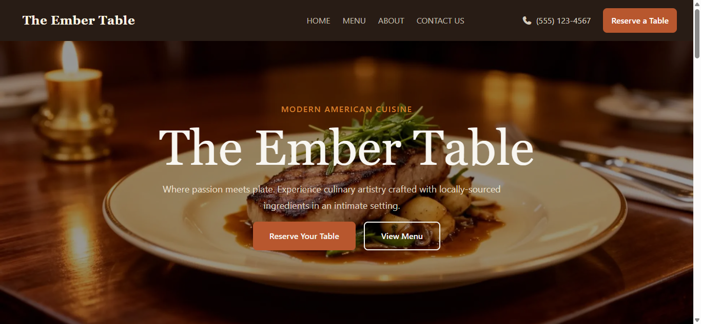
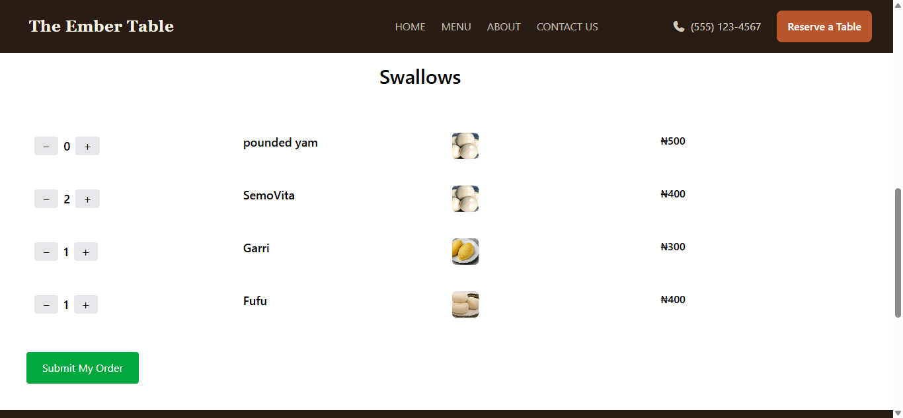
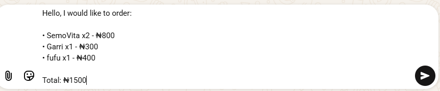
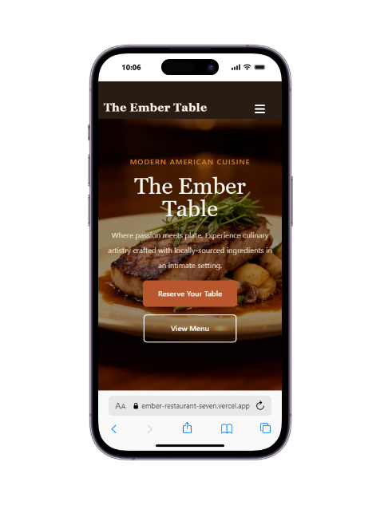

Restaurant website
The Ember Table: a small restaurant website where customers choose dishes from the menu and place an order, which is sent to the vendor on WhatsApp.
- HTML5
- Tailwind CSS
- JavaScript
- Responsive design




Overview
This is a small restaurant website built around ordering. Customers browse the menu, choose what they want and place an order. The order details are sent to the vendor on WhatsApp, so the vendor can see exactly what was ordered.
Around the ordering flow, the site has a hero section, an about section, signature dishes, a location map with opening hours, and reservation buttons.
It is a portfolio project, not a delivered client engagement. The restaurant name, address and phone number on the demo are sample content.
The business need
Small food vendors often take orders through scattered phone calls and chat messages, where details are easy to miss or mishear. Customers, in turn, want a simple way to see what is available and say exactly what they want.
The solution
The site lets customers pick their dishes from the menu and place an order in a few steps. The order then goes to WhatsApp with its details, so the vendor receives it as a message and can see what to prepare.
The rest of the site supports that goal: photography and signature dishes help customers decide, and the hours, address and map answer the usual questions.
Key features
Ordering
Menu and ordering
Customers choose dishes from the menu and place an order.
Order sent to WhatsApp
The order details reach the vendor on WhatsApp.
Presenting the restaurant
Hero and about
A clear first impression and the restaurant story.
Signature dishes
Featured dishes with photos and short descriptions.
Location and hours
Address, opening hours and an embedded Google map.
Reservation buttons
Booking and call buttons placed through the page.
Across the site
Responsive layout
Designed to work on phones, tablets and desktops.
Technical implementation
- Front endHTML5, CSS3 for styling and JavaScript for the interactive parts, including the ordering.
- OrderingJavaScript collects the customer's selection and sends the order details to the vendor on WhatsApp.
- StructureA single-page home with anchored sections, plus a separate menu page.
- MapAn embedded Google Map in the contact section.
- ImagesServed as WebP files, which keeps file sizes small.
- DeploymentHosted on Vercel.
My role
I designed and built the whole site on my own: the layout, the responsive styling, the ordering flow and the deployment.
Challenges and decisions
- Getting orders to the vendorI sent each order to WhatsApp so the vendor can see the details of what was ordered.
- Keeping pages lightThe site relies on large photographs, so I used the WebP format for the images.